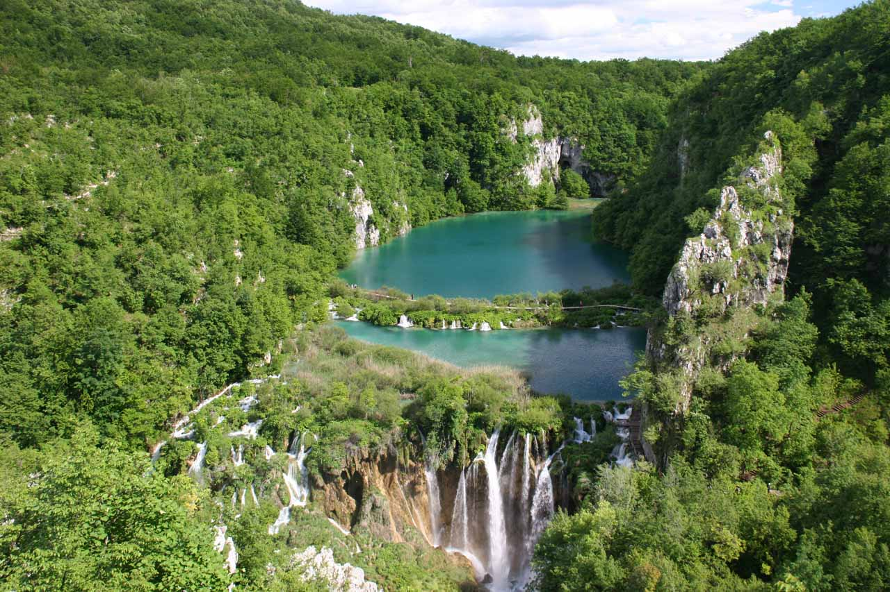

PLITVICE WATERFALLS
Northern Dalmatia, Croatia
When it came to the overall waterfalling experience, it was hard to beat this world famous attraction.
While the rest of the waterfalls on our Top 10 List are primarily singular waterfall attractions, this one consisted of a network of countless waterfalls.
Some of the individual waterfalls impressed us enough to stand out on their own!
The waterfalls themselves segregated the many clear and colorful lakes that brought life to this lush and protected ecosystem.
As Julie and I walked along its many walkways, we went under, over, and around almost all of the notable waterfalls in this network.
This resulted in one of the most intimate waterfalling experiences we’ve ever had.
Add it all up, putting these waterfalls on this list was an absolute no-brainer as far as we were concerned.